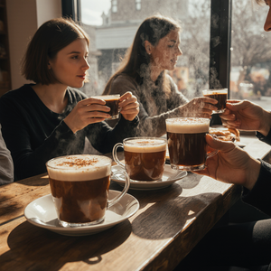
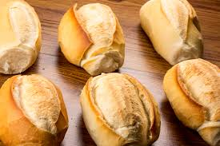
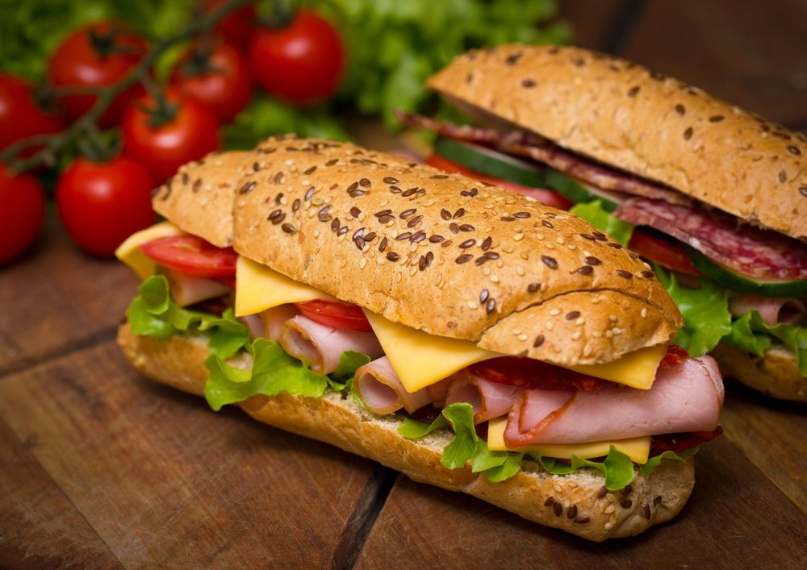
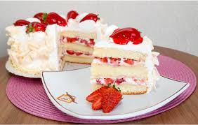
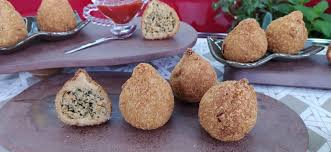
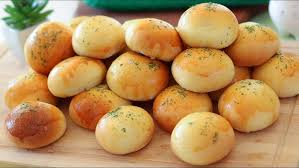
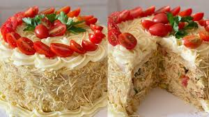

Sobre Nós
A Padaria do Bairro nasceu de um sonho de família e da paixão por pães artesanais. Ao longo de mais de quatro décadas, mantivemos o compromisso com a qualidade, utilizando sempre os melhores ingredientes. Somos mais do que uma padaria; somos um ponto de encontro, um lugar onde o aroma do pão fresco e do café acolhe a todos.
Nossa História
Tudo começou numa pequena loja na esquina, com apenas um forno a lenha. O sucesso veio da dedicação e do carinho em cada fornada. Hoje, modernizamos o espaço, mas a alma e as receitas secretas da Vovó Maria continuam a ser o coração do nosso negócio.
Nosso Ambiente e Equipe
Conheça um pouco do nosso espaço acolhedor e da paixão que colocamos em cada produto.



Nosso Cardápio Completo
Confira a nossa seleção de produtos com preços atualizados. Todos os itens são feitos no dia com ingredientes frescos.
| Categoria | Produto | Descrição Breve | Preço (R$) |
|---|---|---|---|
| Pães | Pão Francês | O clássico, crocante por fora e macio por dentro. | R$ 0,80 |
| Pães | Pão de Açúcar | Doce e fofinho, com uma leve camada de açúcar. | R$ 3,50 |
| Doces | Bolo de Chocolate | Fatia generosa de bolo cremoso com cobertura de brigadeiro. | R$ 12,00 |
| Doces | Torta de Morango | Massa leve, recheio de creme e morangos frescos. | R$ 15,00 |
| Salgados | Coxinha de Frango | Massa de batata e recheio de frango desfiado com temperos caseiros. | R$ 7,00 |
| Salgados | Pastel de Queijo | Pastel frito na hora, recheado com queijo minas. | R$ 6,50 |
| Salgados | Esfirra de Carne | Esfirra aberta com recheio de carne moída bem temperada. | R$ 5,00 |
| Doces | Rosquinha | Com leite condensado e coco ralado. | R$ 10,00 |
| Doces | Cheesecake | Com cobertura de frutas, pistache ou limão. | R$ 110,00 |
| Doces | Bolo por Encomenda (kg) | Sabor e recheio personalizados. | R$ 80,00 |
Nossas Delícias
Uma amostra do que preparamos diariamente com carinho.

🌟 OFERTA!




Tradição e Qualidade
Assista ao nosso vídeo institucional e veja de perto o cuidado com que preparamos o seu pão de cada dia.
Conheça Nossa Essência
Localização e Horários
Estamos no coração do bairro, prontos para te servir. Planeje a sua visita com a nossa tabela de horários.
| Dia da Semana | Abertura | Fechamento | Serviços Especiais |
|---|---|---|---|
| Segunda a Sexta | 6h00 | 19h00 | Café da Manhã Completo |
| Sábado | 6h00 | 18h00 | Lanches da Tarde e Kits Festa |
| Domingo | 7h00 | 12h00 | Somente Produtos de Fornada (sem cozinha) |
| Feriados | 8h00 | 13h00 | Horário Especial |
O sabor que desperta o bairro
Receitas tradicionais, preparo artesanal e aquele cheirinho de pão quentinho logo cedo.

O que nossos clientes dizem
“Melhor pão francês da cidade! Crocante e leve, atendimento impecável.”
— Isa da Silva“Ambiente aconchegante e os bolos são maravilhosos. Sempre volto!”
— Gerivaldo Antunes“Fui atendido com muito carinho. A torta de morango é sensacional!”
— Carlos PereiraEntre em Contato
Quer fazer um pedido especial ou tirar dúvidas? Fale conosco!
- 📞 Telefone: (13) 1234-5678
- ✉️ E-mail: padariadobairro@gmail.com
- 📍 Endereço: Rua dos Padeiros, 123 - Centro